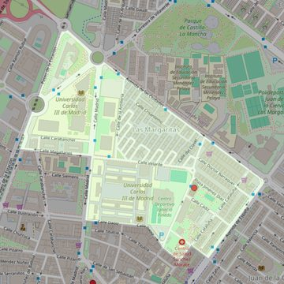

Santa Teresa de Jesús
- Arciprestazgo
- Getafe
- Población
- Getafe
- Dirección postal
- Pza. Dr. Jiménez Díaz, s/n
- Código postal
- 28903
- Extensión
- 0,41 km² (41 ha)
- Teléfono
- 607 474 465
- Correo electrónico
- santateresa-getafe@diocesisgetafe.es
- Información demográfica
- De la parroquia · De la población (Getafe) · Del arciprestazgo (Getafe)


Descargar mapaLímites según decreto
“Partiendo de la confluencia del ferrocarril Madrid-Portugal con la calle Magallanes, arrancan por el eje de las vías de dicho ferrocarril, en dirección noreste; continúan por el eje de la Avenida de las Ciudades (en dirección sureste), por el eje de la Avenida de España (en dirección suroeste), por el eje de la calle Gerona (en dirección noroeste), por el eje de la calle Cataluña (en dirección suroeste) , por el eje de la calle del Dr. Marañón (en dirección noroeste), por el eje de la calle Daoiz (en dirección noroeste), por el eje de la calle Madrid (en dirección noreste), por el eje de la calle Magallanes (en dirección noroeste) hasta la confluencia con el ferrocarril Madrid-Badajoz, punto de partida”